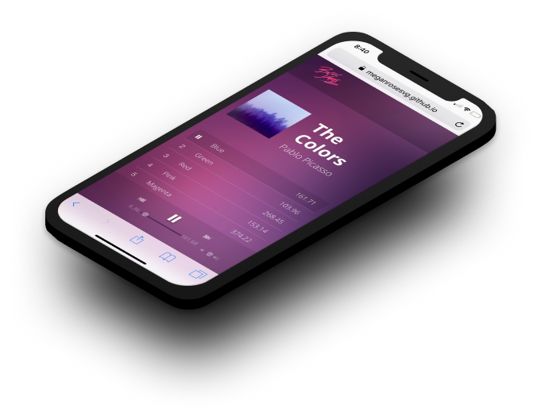

bloc jams
Music player designed with JS and jQuery
my role
jQuery
Frontend developer
PROBLEM
Bloc Jams had a visual platform in it's entirety. It had much of it's content. However, it lacked functionality. I was tasked with creating a solution.
SOLUTION
I worked with jQuery to create many important music player features. I used Javascript and jQuery to create play and pause functions, playback controls, and slider controls for both song duration and volume.
TOOLS
GitHub
Git Bash
Atom
FRONTEND DEVELOPMENT
DIVING DEEP INTO JQUERY

Explored JavaScript functions deeply in the creation of BlocJams, a beautiful and functional music player application. Learned a lot about jQuery as a JS library, and was able to help build sliders, a pause/play feature, and volume control.